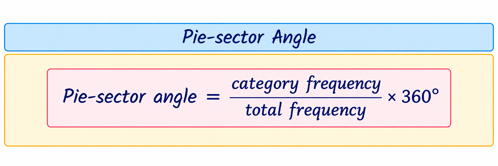
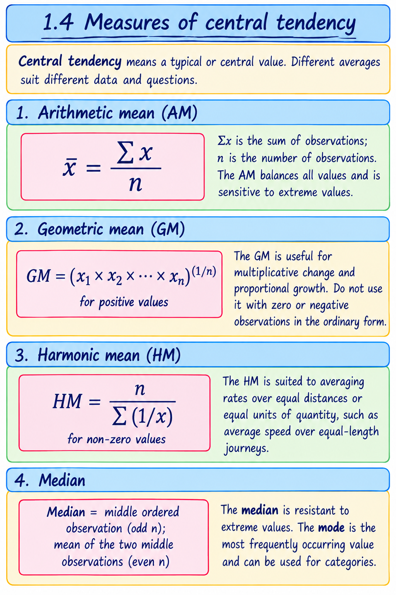
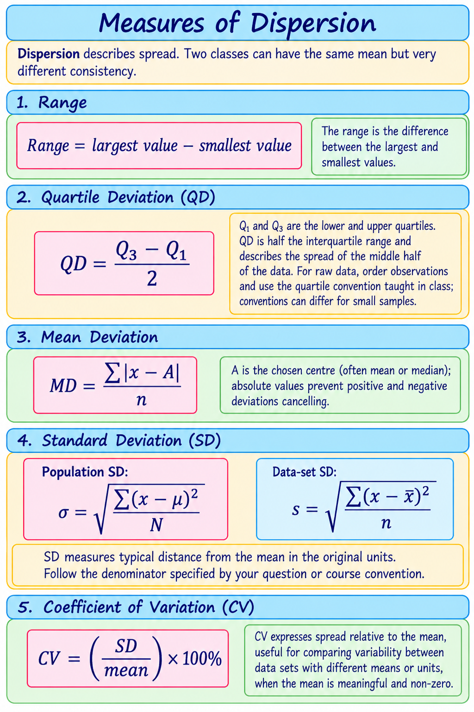
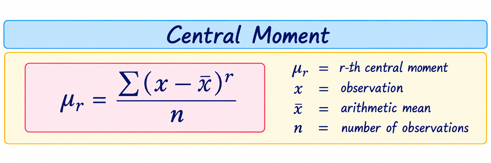
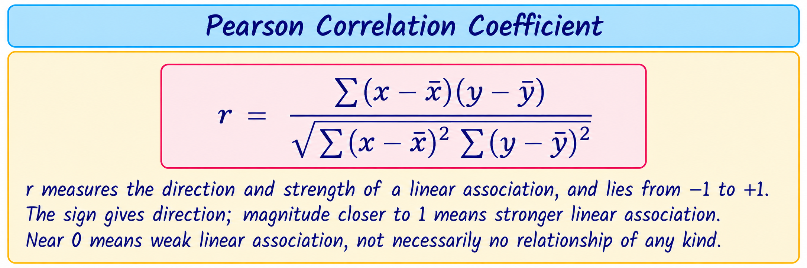
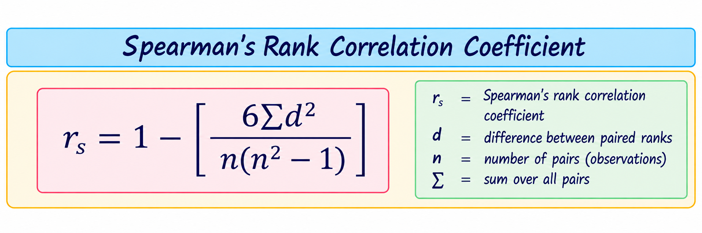
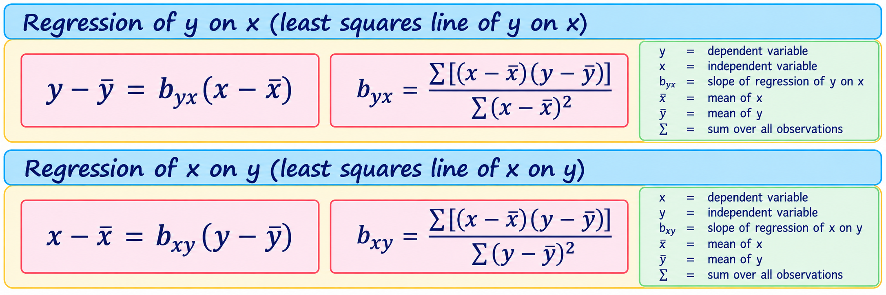
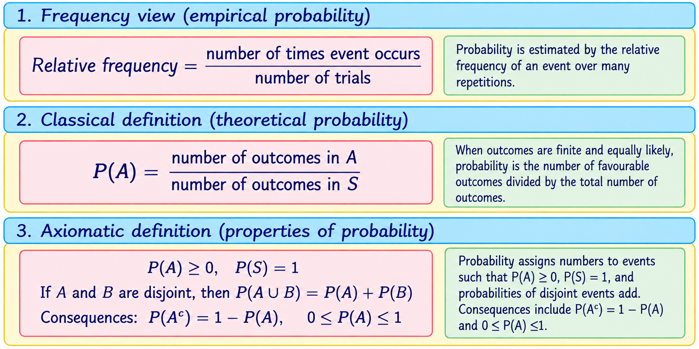
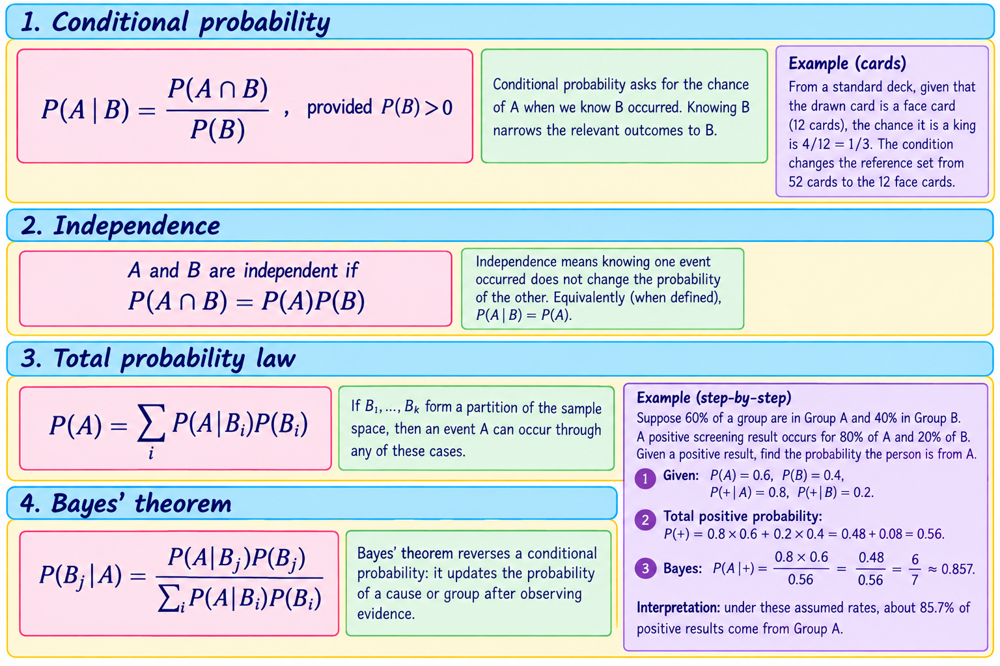
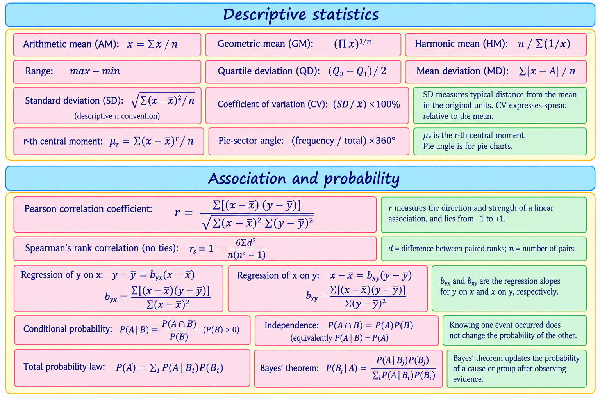

Start here
Statistics turns observations into summaries and evidence. In this course you will learn to describe data, examine relationships, reason about uncertain events and use a spreadsheet to check calculations.
This guide follows the supplied MGU syllabus. Sampling derivations and proofs of correlation properties and Bayes’ theorem are not required by the listed scope. Questions below are exam-focused questions based on the prescribed syllabus; they are not represented as past or guaranteed MGU questions.
Assessment at a glance
- ESE theory: 50 marks — 7 of 10 short answers (2 marks each), 4 of 6 short essays (6 marks each), and 1 of 2 essays (12 marks).
- Practical evaluation: 35 marks — problem-solving skills (30) and record (5).
- CCA: theory 15 and practical 15; summative written tests: 10 theory marks.
- The syllabus requires a practical record containing at least five problems.
Complete course concept map
→ POPULATION & SAMPLE → SAMPLING → SUMMARISE DATA
→ CENTRE (AM, GM, HM, MEDIAN, MODE) + SPREAD (RANGE, QD, MD, SD, CV)
→ SHAPE (MOMENTS, SKEWNESS, KURTOSIS)
→ TWO VARIABLES → SCATTER DIAGRAM → CORRELATION → REGRESSION & PREDICTION
UNCERTAIN PROCESS → RANDOM EXPERIMENT → SAMPLE SPACE → EVENT
→ PROBABILITY → CONDITIONAL PROBABILITY → INDEPENDENCE
→ TOTAL PROBABILITY → BAYES’ THEOREM
SPREADSHEET SKILLS support calculations and visualisation across the modules.
First identify what was observed and how it was measured. Then describe one variable, compare two variables, or model uncertain outcomes. A spreadsheet helps organise, calculate and display these results.
Priority based on syllabus evidence
Priority here reflects the stated learning outcomes, content and teaching hours—not an invented marks prediction.
MUST MASTER Mean/median/mode and dispersion calculations; interpret CV; read and construct basic graphs and box plots; correlation concepts and coefficient problems; regression lines and prediction limits; elementary probability, conditional probability, independence, total probability and Bayes; spreadsheet procedures.
IMPORTANT Data sources and variable types; measurement scales; sampling methods; GM and HM; moments, skewness and kurtosis; interpretation of scatter diagrams and ranks.
QUICK SCORE Accurate definitions, distinctions, formula symbols, graph choice, assumptions/limitations and spreadsheet terminology.
80% study path
- Foundation: data, variables, scales, population/sample, events and sample space.
- Core: descriptive measures, correlation, regression and probability rules.
- Problem solving: practise raw-data calculations and five or more spreadsheet tasks.
- Exam mastery: solve mixed problems; explain interpretations and limitations in words.
- Final revision: retrieve formulas from memory, do timed answers, review errors and check each outcome.
Data, variables, summaries and shape
Module overview
You will learn: data types and displays; measurement scales; population and sampling; averages; dispersion; box plots; moments, skewness and kurtosis.
Why it matters: before interpreting results, we need to know what the observations represent, how they were collected, where they centre and how much they vary.
Suggested study time: about 8–10 self-study hours in addition to scheduled classes. Spend most practice time on central tendency and dispersion, while revisiting definitions and graphs.
Priority: raw-data calculations and interpretation; sampling distinctions; correct diagram choice; understanding what each measure says.
1.1 Data, variables, diagrams and graphs
Data are recorded observations. A variable is a feature that can take different values, such as a student’s travel time or mode of transport.
| Term | Simple meaning | Example |
|---|---|---|
| Primary data | Collected first-hand for the present purpose | A lecturer surveys this class about study hours |
| Secondary data | Already collected by someone else or for another purpose | Using published district population figures |
| Univariate data | One variable recorded for each unit | Heights of students |
| Bivariate data | Two variables recorded together for each unit | Study hours and marks for each student |
A bar diagram compares categories using separated bars. A pie diagram shows parts of a whole; each sector angle is its proportion multiplied by 360°. A frequency graph displays how often values or groups occur. Use a bar diagram for categories and a frequency graph for a numerical distribution; label axes and units.

Quick example
In a class of 40, 10 students travel by bus. The bus sector is (10 ÷ 40) × 360° = 90°.
1.2 Scales of measurement
| Scale | What it tells you | Example | Useful distinction |
|---|---|---|---|
| Nominal | Names or categories only | Blood group, course stream | No order implied |
| Ordinal | Categories with an order | Low, medium, high satisfaction | Gaps between ranks are not known to be equal |
| Interval | Ordered values with equal intervals, but no true zero | Temperature in °C | 20°C is not twice as hot as 10°C |
| Ratio | Equal intervals and a meaningful zero | Mass, distance, elapsed time | Ratios are meaningful |
Ask: are the values labels? Can they be ordered? Are equal differences meaningful? Does zero mean none of the quantity? These questions help identify the scale.
1.3 Population, sample and sampling
A population is the full group a study is about. A sample is the subset actually observed. Sampling saves time and cost, but a biased sample can give a misleading picture.
| Method | How it works | Example |
|---|---|---|
| Non-probability sampling | Selection chances are not specified through random selection | Surveying volunteers leaving a library |
| Simple random sampling | Each population member has an equal chance; select by random method | Randomly draw 30 student IDs from the register |
| Systematic sampling | Choose a random start, then every kth member | Every 10th household after a random start |
| Stratified random sampling | Divide into relevant strata, then randomly sample within each | Sample students from each year of study |
| Cluster sampling | Divide into natural groups, randomly select clusters, survey selected clusters | Randomly select colleges, then survey students in them |
For systematic selection, if population size is N and desired sample size is n, the interval is often k ≈ N/n. The syllabus asks for concepts and examples; sampling derivations are not required.

Step-by-step example: 2, 4, 4, 10
Given: four observations. Required: AM, median and mode.
- AM: sum = 2 + 4 + 4 + 10 = 20; divide by n = 4; AM = 5.
- Data are already ordered. The two middle values are 4 and 4; median = (4 + 4)/2 = 4.
- 4 occurs most often; mode = 4.
Interpretation: the mean is pulled upward by 10, while median and mode describe the centre as 4.

A box plot shows minimum, Q₁, median, Q₃ and maximum (and may mark outliers depending on the convention). The box spans Q₁ to Q₃; the line inside marks the median.
Step-by-step example: 2, 4, 4, 6
- Mean = (2+4+4+6)/4 = 4.
- Deviations from mean: −2, 0, 0, 2; squared deviations: 4, 0, 0, 4.
- Using n for this descriptive data set: variance = 8/4 = 2; SD = √2 ≈ 1.414.
- Range = 6−2 = 4. Using median-of-halves quartiles, Q₁=3, Q₃=5, so QD=(5−3)/2=1.
- CV = (1.414/4)×100% ≈ 35.4%.
Interpretation: observations typically vary about 1.414 units from their mean of 4. The quartile and CV results use the conventions stated here.
1.6 Moments, skewness and kurtosis
A moment is a summary built from powers of deviations or values. Moments help describe centre, spread and distribution shape. For raw observations, the rth central moment is the average rth power of deviations from the mean.

The second central moment is variance (with the descriptive n convention above). The third central moment relates to skewness, or asymmetry. Positive skew usually has a longer right tail; negative skew has a longer left tail. The fourth central moment relates to kurtosis, a measure of tail/peak shape relative to a normal reference under a stated convention.
At this level focus on what the measures describe and how to identify shape from examples, as specified in the syllabus; derivations are not required.
Module 1 recap
10 core concepts: primary/secondary data; univariate/bivariate data; measurement scale; population/sample; sampling method; centre; spread; relative variation; box plot; distribution shape.
Key terms: variable, frequency, nominal, ordinal, interval, ratio, random sample, quartile, deviation, moment, skewness, kurtosis.
Exam-focused questions: Distinguish primary and secondary data. Classify variables/scales from examples. Explain stratified and cluster sampling. Calculate AM, median, mode, QD, MD, SD and CV for raw data. Explain what skewness and kurtosis describe.
Must practise: order raw data; calculate different centres; calculate dispersion with written steps; interpret a box plot; choose a suitable graph; compare two samples thoughtfully.
Revision checklist: I can choose a scale and diagram; explain each sampling method; calculate each prescribed measure; interpret rather than merely report answers; describe skewness and kurtosis.
Correlation and regression
Module overview
You will learn: scatter diagrams, Karl Pearson’s correlation coefficient, Spearman’s rank correlation coefficient and the two regression lines.
Why it matters: paired measurements can reveal whether variables move together and support cautious prediction.
Suggested study time: 8–10 hours. Give extra practice to coefficient calculations, regression equations and interpretation.
Concept map: paired data → scatter diagram → direction/strength/form → correlation coefficient → regression line → estimate and interpret.
2.1 Correlation and scatter diagram
Correlation describes the direction and degree of association between two variables. Plot each pair (x,y) as a point. An upward pattern suggests positive association; downward suggests negative; a diffuse cloud suggests weak or no linear association. A curved pattern may have a relationship that a linear coefficient does not capture well.
Negative: y tends to fall as x rises ↘
Near zero linear correlation: no clear straight-line pattern
Correlation alone does not establish that one variable causes the other. Other variables, selection effects or coincidence may explain an association.
Karl Pearson’s correlation coefficient

Small example
Pairs (1,2), (2,4), (3,6) lie exactly on an increasing straight line y=2x. Their Pearson correlation is r=+1: perfect positive linear association. This does not by itself prove x causes y.
Spearman’s rank correlation coefficient
Spearman’s coefficient measures association between ranks. Rank each variable separately, find each paired rank difference d, and use the formula below when there are no tied ranks.

Here n is the number of paired observations and d is the difference between the two ranks for a pair. When ties occur, use the tied-rank procedure specified in class/software rather than applying this simple formula uncritically.
Step-by-step rank example (no ties)
For three students, ranks in study time are 1,2,3 and ranks in score are 1,2,3. All d=0, so Σd²=0. Thus rₛ = 1 − 0 = 1, a perfect agreement of ranks.
2.2 Regression lines and prediction
Regression describes a fitted relationship used to estimate one variable from another. There are two regression lines: regression of y on x (estimate y when x is known) and regression of x on y (estimate x when y is known).

The regression coefficient is the slope: how much the estimated response changes for a one-unit change in the predictor. Select the line according to which variable you are predicting; the two lines are generally different.
Step-by-step example
Suppose a fitted regression line for marks y from study hours x is y = 32 + 5x. For x=4 hours:
- Substitute x=4: predicted y = 32 + 5(4).
- Calculate: 32 + 20 = 52.
- Interpretation: the model estimates 52 marks for a student studying 4 hours, in the context of the data used to fit it.
This illustrates use of a line; in a full numerical question, calculate its coefficients from the supplied paired data.
Properties to remember: both regression lines pass through (x̄,ȳ); when correlation is perfect, the lines coincide; when correlation is not perfect, they are distinct. The syllabus asks for concepts, problems and properties, without proof.
Module 2 recap
10 core concepts: paired data; scatter diagram; direction; strength; linearity; Pearson r; Spearman ranks; regression response/predictor; two regression lines; prediction limitations.
Exam-focused questions: Describe a scatter diagram. Explain and interpret Pearson’s r. Calculate Spearman’s coefficient for untied ranks. Obtain/interpret the regression line of y on x. Distinguish the two regression lines and discuss limits of prediction.
Must practise: make a scatter plot; compute deviations and Pearson’s r; rank paired values carefully; fit both regression lines; substitute a value and explain the estimate.
Revision checklist: I can distinguish correlation and regression; state coefficient ranges and meaning; select the correct regression line; interpret and qualify predictions.
Elementary probability theory
Module overview
You will learn: random experiments, sample spaces, events, frequency/classical/axiomatic probability, conditional probability, independence, total probability and Bayes’ theorem.
Why it matters: probability gives a consistent way to reason about uncertain outcomes and update conclusions when evidence is observed.
Suggested study time: 8–10 hours. Draw sample spaces and practise identifying the condition in conditional-probability questions.
Concept map: experiment → outcomes/sample space → event → probability → condition/evidence → update.
3.1 Random experiment, sample space and event
A random experiment has an outcome that is uncertain before it is performed, even when its possible outcomes are known. The sample space S is the set of possible outcomes. An event is a subset of S.
Example: one coin and one die
Outcome can be written as (coin result, die result). Sample space has 12 outcomes: (H,1)…(H,6),(T,1)…(T,6). Event “die shows an even number” contains outcomes with die result 2, 4 or 6.
3.2 Elementary definitions of probability

Simple example
For a fair die, event A = “even number” = {2,4,6}. The six outcomes are equally likely, so P(A)=3/6=1/2.
3.3 Conditional probability, independence, total probability and Bayes

Module 3 recap
10 core concepts: random experiment; outcome; sample space; event; complement; probability definitions; conditional probability; independence; partition; Bayes update.
Exam-focused questions: Define sample space and event with an example. Compare the three probability definitions. Calculate a conditional probability. Test independence. State/apply the total probability law and Bayes’ theorem (proof not required).
Must practise: list outcomes; use complements; identify equally likely outcomes; draw a probability tree/table; distinguish prior, likelihood and posterior probabilities.
Revision checklist: I can define events; select an appropriate probability method; calculate conditionals; check independence; use total probability before Bayes.
Problem solving using spreadsheets
Module overview
You will learn: spreadsheet basics and how to solve numerical problems connected to topics in the other modules.
Why it matters: spreadsheets make data entry, repeated calculations, graphs and checking easier. You must still understand what a function calculates.
Suggested study time: use the practical sessions to complete at least five documented problems and repeat them without step-by-step prompts.
Concept map: enter data → label cells → choose function/formula → check output → graph if useful → interpret → record method.
Safe, repeatable workflow
- Enter one observation per cell and add clear variable names and units.
- Keep raw data unchanged; do calculations in separate cells or sheets.
- Use a formula or spreadsheet function appropriate to the syllabus topic.
- Check range selection, missing values, sorting and denominator conventions.
- Display results with suitable number formats and a labelled graph where relevant.
- Write a short interpretation and save the practical record with question, method, output and conclusion.
Common spreadsheet functions (names vary slightly by software and locale) include AVERAGE, MEDIAN, MODE.SNGL, MIN, MAX, STDEV.P, STDEV.S, CORREL, COUNTIF and chart tools. Confirm the function names and expected convention in the software used in your lab.
Suggested practical record: minimum five problems
- Enter raw data and calculate AM, median and mode; compare the outputs.
- Calculate range, quartiles/QD, mean deviation, SD and CV for a data set.
- Create a frequency table and a suitable bar/frequency graph; label it.
- Enter paired data, draw a scatter diagram and calculate Pearson correlation.
- Rank paired observations and calculate Spearman correlation (use untied data for the basic formula).
- Use paired data to find a regression line and make an in-range estimate; note its limitation.
- Use a table/tree to calculate conditional probability and apply Bayes’ theorem.
Choose at least five tasks for the submitted record, following your teacher’s instructions. Include the problem statement, input data, function/formula, screenshot or output, interpretation and one check.
Common practical and viva questions
- What does a cell reference mean? What is a range?
- Why label columns and preserve the raw data?
- Which graph is suitable for categories? What does a scatter plot show?
- What is the difference between population SD and sample SD functions?
- How can you check whether a formula used the correct cells?
- Why does a spreadsheet answer still need interpretation?
Exam-focused question bank
These practice prompts are based on the prescribed syllabus. They are not actual MGU questions and do not predict guaranteed questions.
2-mark questions
- Define primary data and give one example.
- What is bivariate data?
- Distinguish nominal and ordinal scales.
- Define a population and a sample.
- What is the coefficient of variation?
- What does a scatter diagram display?
- State the range of Karl Pearson’s correlation coefficient.
- Define a sample space and an event.
- State the formula for conditional probability.
- What is meant by independent events?
6-mark questions
- Explain the four measurement scales with examples.
- Compare simple random, systematic, stratified and cluster sampling.
- Calculate and interpret mean, median and mode for a small raw data set.
- Explain range, QD, MD, SD and CV and distinguish absolute from relative dispersion.
- Explain Pearson’s correlation coefficient and interpret its sign and magnitude.
- Describe Spearman’s rank correlation procedure and solve an untied-ranks example.
- Explain the two regression lines and how to choose one for prediction.
- Explain frequency, classical and axiomatic definitions of probability.
- Explain conditional probability and independence with examples.
- Describe a spreadsheet workflow for analysing a raw data set.
12-mark questions
- For a supplied raw data set, calculate appropriate measures of central tendency and dispersion, then interpret the results.
- For supplied paired data, analyse the scatter pattern, calculate correlation and obtain a regression estimate; comment on limitations.
- Explain conditional probability, independence, total probability and Bayes’ theorem, illustrating their use with a suitable example.
- Describe how spreadsheet tools can be used to analyse and present data from the prescribed course topics.
Numerical practice
- For 3, 5, 5, 7, 10 find AM, median, mode and range.
- For 2, 4, 4, 6 calculate QD using the median-of-halves convention, MD about the mean, descriptive SD using n, and CV.
- For counts 12, 8 and 20, calculate each pie chart sector angle.
- Given paired values (1,2),(2,4),(3,5),(4,7), make a scatter sketch and calculate Pearson’s r using the stated formula.
- For untied ranks with rank differences 0, 1, −1, 0 and n=4, calculate Spearman’s coefficient.
- Given y=18+3x, estimate y at x=6 and state one limitation of the estimate.
- A fair die is rolled. Find the probability of an outcome greater than 4 and its complement.
- If P(A)=0.4, P(B)=0.5, P(A∩B)=0.2, calculate P(A|B) and check independence.
- Use the Group A/Group B screening example in Module 3 to recalculate P(A|+) and explain the result.
Conceptual and compare questions
- Why can mean and median differ substantially in skewed data?
- Compare GM and HM with AM: when might each be suitable?
- Compare range with QD and SD.
- Differentiate correlation from regression.
- Compare Pearson’s and Spearman’s coefficients.
- Differentiate P(A|B) from P(B|A).
- Compare stratified and cluster sampling.
- Differentiate interval and ratio scales.
Formula sheet and answer-writing guide

How to write answers by marks
| Marks | Useful answer shape |
|---|---|
| 2 | Give a precise definition and one distinguishing point or example. |
| 6 | Define the concept, explain its parts, show a formula or example where relevant, and interpret. |
| 12 | Organise an introduction, explanation, formula/diagram, worked example, interpretation and brief conclusion. |
For numerical answers, show: Question → Given → Required → Formula → Substitution → Calculation → Final answer → Interpretation. Include units where applicable and state the convention used if it affects the result.
Four-week study plan
| Week | Study | Practice and revision |
|---|---|---|
| 1 · Foundation | Module 1: data, graphs, scales, population/sample and sampling; begin central tendency. | Classify examples; draw diagrams; calculate AM, GM, HM, median and mode for small data sets. |
| 2 · Summaries and relationships | Finish Module 1 dispersion, box plots, moments and shape. Start Module 2. | Complete raw-data calculations; interpret CV and box plots; practise Pearson, Spearman and both regression lines. |
| 3 · Probability and spreadsheet | Module 3 in order; work through Module 4 practical tasks alongside it. | Draw sample spaces and trees; solve conditional/Bayes problems; complete at least five spreadsheet-record problems. |
| 4 · Exam mastery | Review all outcomes, concepts, formulas and practical methods. | Attempt timed 2-, 6- and 12-mark answers; solve mixed numericals; correct errors; use the final checklist. |
Adjust the pace to your class timetable. Short, repeated retrieval sessions are more useful than trying to memorise the whole formula sheet in one sitting.
Final revision checklist
Final 80% revision path: (1) revise definitions and data displays; (2) practise central tendency and dispersion; (3) solve correlation/regression questions; (4) solve probability problems, especially conditionals and Bayes; (5) repeat spreadsheet tasks; (6) finish with timed mixed answers and review your error notebook.
Short model answers and worked numericals
Use these as examples of clear answer structure. In a full assessment, match the detail to the exact wording and marks.
2-mark model: distinguish population and sample
Population is the complete group about which information is sought. A sample is a subset selected from that population for observation. For example, all first-year students at a college may be the population, while 40 selected students form a sample.
6-mark model: explain the measurement scales
Measurement scales describe what information recorded values contain. A nominal scale names categories without order, such as blood group. An ordinal scale orders categories, such as low, medium and high satisfaction, but the gaps need not be equal. An interval scale has ordered values and equal differences but no true zero, as with temperature in °C. A ratio scale has equal differences and a meaningful zero, as with distance; 8 km is twice 4 km. The scale affects which comparisons and summaries are meaningful.
12-mark model outline: describe and compare two data sets
- Introduction: state that central tendency describes centre while dispersion describes spread.
- Method: order each raw data set; calculate a suitable centre (mean or median) and spread (SD, QD or range) using the stated convention.
- Working: show formula, substitution and arithmetic in labelled steps. A table of observations and deviations can make the calculation clear.
- Comparison: compare centres to discuss typical values. Compare SD when units and scales are comparable; use CV to compare relative variability when means are non-zero and meaningful.
- Interpretation: explain which set is more variable and what that means in context. Mention a possible effect of outliers on the mean/range.
- Conclusion: summarise the evidence without claiming more than the data show.
This is a structure, not a fixed essay: insert the supplied data and computed values in an examination response.
Worked numerical: central tendency
Question: Find AM, median and mode for 3, 5, 5, 7, 10.
- AM: sum = 30 and n=5; AM = 30/5 = 6.
- Ordered data are 3, 5, 5, 7, 10. The middle observation is 5, so median = 5.
- 5 occurs twice, more than any other value; mode = 5.
Interpretation: the larger value 10 raises the mean above the median.
Worked numerical: dispersion
Question: For 2, 4, 4, 6, calculate mean deviation about the mean, descriptive SD and CV; use the median-of-halves quartile convention for QD.
- Mean = 20/4 = 5. Absolute deviations are 3, 1, 1, 1; MD = 6/4 = 1.5.
- Squared deviations are 9, 1, 1, 1; descriptive variance = 12/4 = 3; SD = √3 ≈ 1.732.
- Ordered halves are (2,4) and (4,6): Q₁=3, Q₃=5, so QD=(5−3)/2=1.
- CV=(1.732/5)×100% ≈ 34.64%.
Interpretation: the mean absolute deviation is 1.5 data units; the SD is about 1.732 units. The CV expresses the SD as about 34.64% of the mean.
Worked numerical: Pearson correlation
Question: For x=(1,2,3,4), y=(2,4,5,7), calculate Pearson’s r.
- x̄=2.5, ȳ=4.5. The paired deviations are (−1.5,−2.5), (−0.5,−0.5), (0.5,0.5), (1.5,2.5).
- Sum of cross-products = 3.75+0.25+0.25+3.75=8. Sum of squared x deviations=5; y deviations=13.
- r=8/√(5×13)=8/√65≈0.992.
Interpretation: these observations show a strong positive linear association. The coefficient alone does not show that x causes y.
Worked numerical: Spearman rank correlation
Question: For n=4 untied pairs with rank differences d=(0,1,−1,0), calculate rₛ.
- Square and add differences: Σd²=0+1+1+0=2.
- rₛ=1−[6×2/(4(4²−1))]=1−12/60=0.8.
Interpretation: the rank ordering has a positive association.
Worked numerical: check independence
If P(A)=0.4, P(B)=0.5 and P(A∩B)=0.2, then P(A)P(B)=0.4×0.5=0.2. Since this equals P(A∩B), A and B are independent. Also P(A|B)=0.2/0.5=0.4=P(A), which gives the same check.